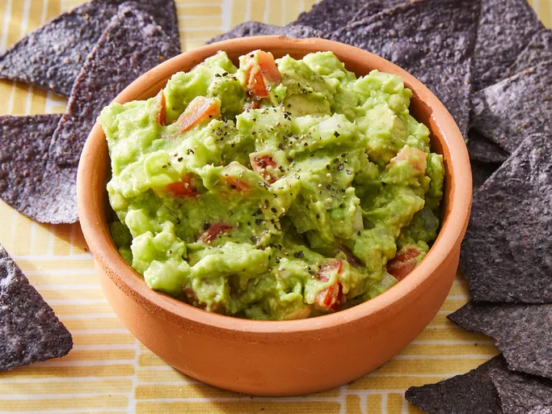

Guacamole

Description
Guacamole is a creamy, vibrant dip that is all about the ripe avacodos mashed into
a smooth texture with a zesty kick. It's got a fresh, earthy vibe brightened up with
splash of lime and a hint of spice, making it the perfect sidekick for nachos or just
scooping with chips. You'll find it at any part worth attending, a green bowl of goodness
that's simple yet steals the show.
Ingredients
- 2 Ripe Avacados
- 1 Lime (juiced)
- 1 Small Tomato (diced)
- 1/4th Red Onion (finely chopped)
- 1/2 teaspoon Salt
Steps
- Halve avacados and scoop flesh (discard the pit) into a bowl. Mash with a fork until smooth
- Squeeze in the lime, add salt, chilli powder, and cayenne pepper and stir it all together.
- Mix in diced tomato and chopped red onion and mix until well blended
- Taste and adjust as needed.
- Serve fresh and enjoy!
Home